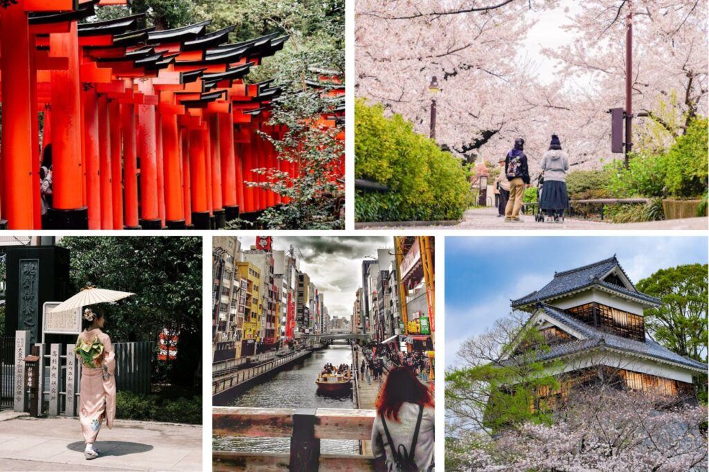
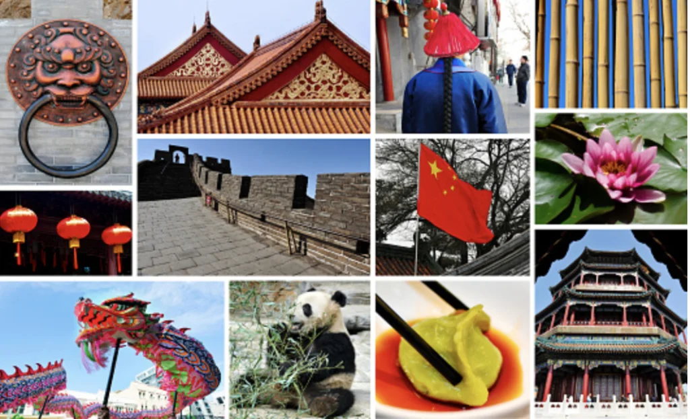
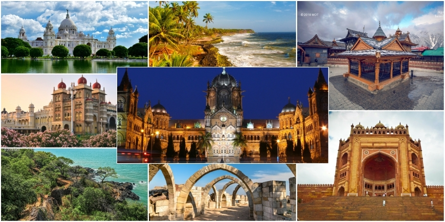
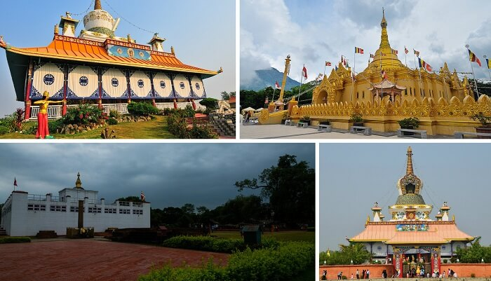

Japón
🎒 Tips personales
“Cómo no meter la pata en Japón: guía de modales esenciales” No se deja propina, no se habla fuerte en el tren y hay zapatillas para el baño. ¡Detalles que hacen la diferencia! 🍜 Comida típica
“Ramen, sushi y más: 5 platos que no conoces (y deberías probar)” Okonomiyaki, takoyaki o mochi helado. Japón es una aventura culinaria en cada esquina. 📸 Lugares instagrameables
“Kyoto en primavera: el festival de los cerezos en flor” Caminar bajo los sakura es como estar dentro de una postal viva.
“Cómo no meter la pata en Japón: guía de modales esenciales” No se deja propina, no se habla fuerte en el tren y hay zapatillas para el baño. ¡Detalles que hacen la diferencia! 🍜 Comida típica
“Ramen, sushi y más: 5 platos que no conoces (y deberías probar)” Okonomiyaki, takoyaki o mochi helado. Japón es una aventura culinaria en cada esquina. 📸 Lugares instagrameables
“Kyoto en primavera: el festival de los cerezos en flor” Caminar bajo los sakura es como estar dentro de una postal viva.

China
🖼️ Experiencias de viajeros
“Mi noche en un tren cama cruzando China” Una experiencia entre paisajes, té caliente, y compartir con locales en un espacio minúsculo y encantador. 🎉 Cultura y festividades
“Año Nuevo Chino: luces, dragones y supersticiones” El momento más importante del calendario chino, lleno de símbolos, rituales y mucha comida. ✈️ Inspiración de destino
“Qué se siente estar en la Gran Muralla: historia a tus pies” Caminar sobre una maravilla del mundo con el viento en la cara y siglos bajo tus pies.
“Mi noche en un tren cama cruzando China” Una experiencia entre paisajes, té caliente, y compartir con locales en un espacio minúsculo y encantador. 🎉 Cultura y festividades
“Año Nuevo Chino: luces, dragones y supersticiones” El momento más importante del calendario chino, lleno de símbolos, rituales y mucha comida. ✈️ Inspiración de destino
“Qué se siente estar en la Gran Muralla: historia a tus pies” Caminar sobre una maravilla del mundo con el viento en la cara y siglos bajo tus pies.

India
🧘 Viajes espiritualess encuentran su paz”
A orillas del Ganges, con templos, cantos y espiritualidad flotando en el aire. 🎒 Tips personales
“Sobreviví a un tuk-tuk en Delhi (y volvería a hacerlo)” Caótico, ruidoso y emocionante. Así se vive el transporte en India. 🍜 Gastronomía
“Comer con las manos en India: una experiencia para los sentidos” Dal, curry, naan… y el placer de sentir la comida antes de saborearla.
A orillas del Ganges, con templos, cantos y espiritualidad flotando en el aire. 🎒 Tips personales
“Sobreviví a un tuk-tuk en Delhi (y volvería a hacerlo)” Caótico, ruidoso y emocionante. Así se vive el transporte en India. 🍜 Gastronomía
“Comer con las manos en India: una experiencia para los sentidos” Dal, curry, naan… y el placer de sentir la comida antes de saborearla.

Nepal
✈️ Inspiración de destino
“Trekking en los Himalayas sin ser un alpinista” Rutas accesibles, paisajes de otro mundo y pueblos que parecen detenidos en el tiempo. 🖼️ Experiencias de viajeros
“Un té con vista al Everest: así fue mi estancia en Namche Bazaar” Un pequeño pueblo suspendido entre montañas y cielos infinitos. 🧘 Cultura y espiritualidad
“Stupas, mantras y ruedas de oración: la esencia de Katmandú” Donde el budismo se respira en cada rincón y el incienso guía tus pasos.
“Trekking en los Himalayas sin ser un alpinista” Rutas accesibles, paisajes de otro mundo y pueblos que parecen detenidos en el tiempo. 🖼️ Experiencias de viajeros
“Un té con vista al Everest: así fue mi estancia en Namche Bazaar” Un pequeño pueblo suspendido entre montañas y cielos infinitos. 🧘 Cultura y espiritualidad
“Stupas, mantras y ruedas de oración: la esencia de Katmandú” Donde el budismo se respira en cada rincón y el incienso guía tus pasos.